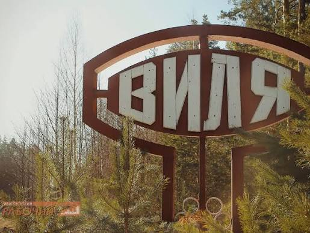
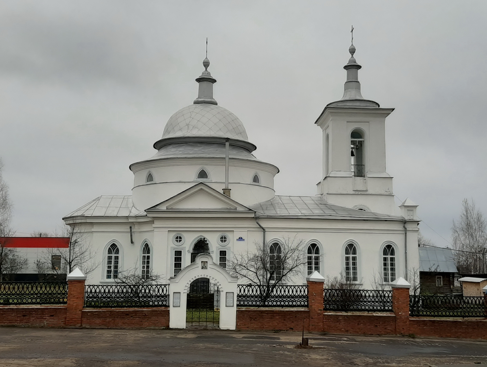
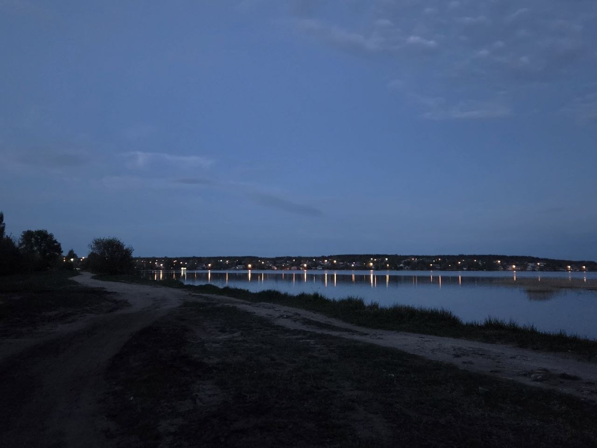
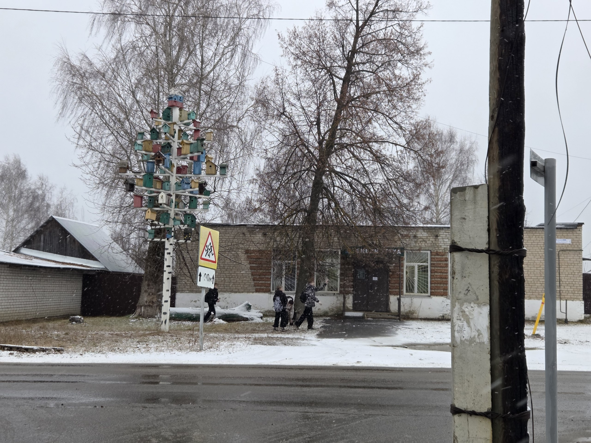
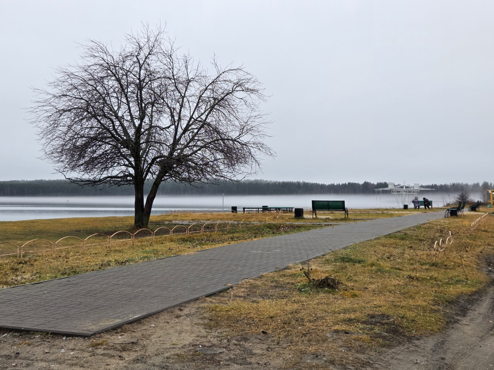
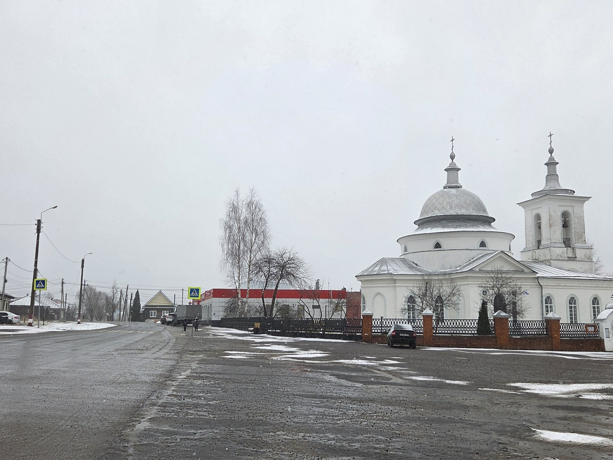
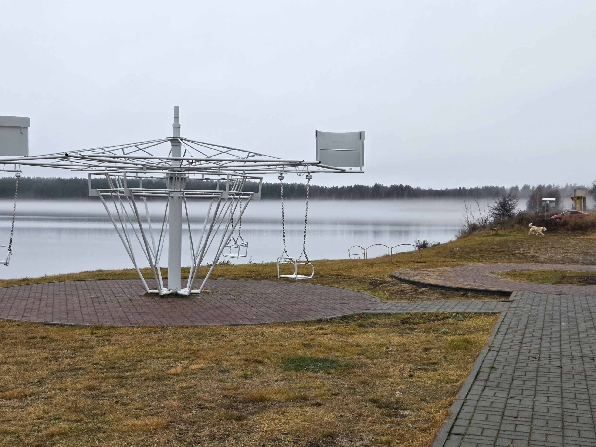

Добро пожаловать в посёлок Виля!
Приветствуем вас на нашем сайте! Это не просто стандартный путеводитель, а настоящий интерактивный квест-исследование, созданный для того, чтобы познакомить вас с историей, атмосферой и самыми интересными уголками нашего посёлка.
Что вас ждёт на сайте:
-
Узнайте историю и атмосферу:
На главной странице вы можете погрузиться в жизнь Вили и посмотреть нашу яркую фотогалерею.
-
Пройдите интерактивный квест:
Переходите на вкладку «Интерактивная часть», где вас ждёт увлекательный маршрут по ключевым локациям посёлка.
-
Открывайте факты и проходите тесты:
На каждой точке карты вас ждут интересные истории, факты и мини-тесты для проверки вашей внимательности!
Посёлок Виля появился в 1798 году благодаря промышленнику Ивану Баташёву. Изначально это было поселение при Верхне-Железницком заводе, специализировавшемся на выпуске сельхозинструмента (кос, серпов и вил), а статус рабочего посёлка оно получило в 1945 году.
Теории о происхождение названия посёлка:
Географическая (самая вероятная). Название пошло от местной речки, которая сильно петляла и «виляла» по лесу, или от самой местности - у впадения в реку Железницу образовывалась «развилка», которую в народе звали виля или вилка.
Финно-угорская (языковая). До прихода славян здесь жили мордовские племена. На эрзянском и мокшанском языках слово «веле» означает просто «село» или «деревня». Со временем для русского уха непривычное «веле» превратилось в привычное «Виля».
Заводская (профессиональная). Поселок вырос вокруг металлургического завода братьев Баташёвых. Там ковали сельхозинструменты, в том числе вилы, что породило версию о связи названия с продукцией (хотя краеведы отмечают, что главным товаром завода были всё-таки косы).
Легендарная (фольклорная). По старинной теории, в эти глухие муромские леса сослали жену Ивана Грозного - Анну Васильчикову. От тоски и одиночества она постоянно плакала и «выла» - отсюда якобы и пошло название.
Галерея Вили
Посмотрите на природу и памятные места нашего посёлка!






